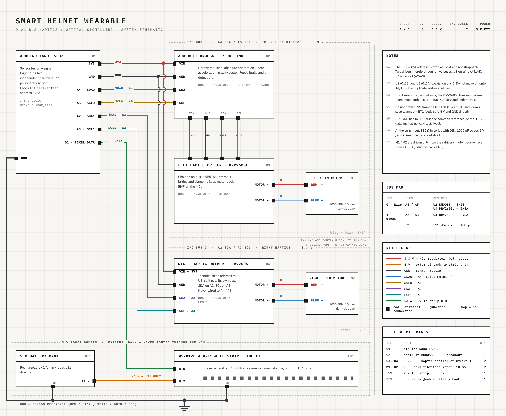
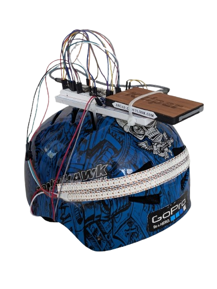
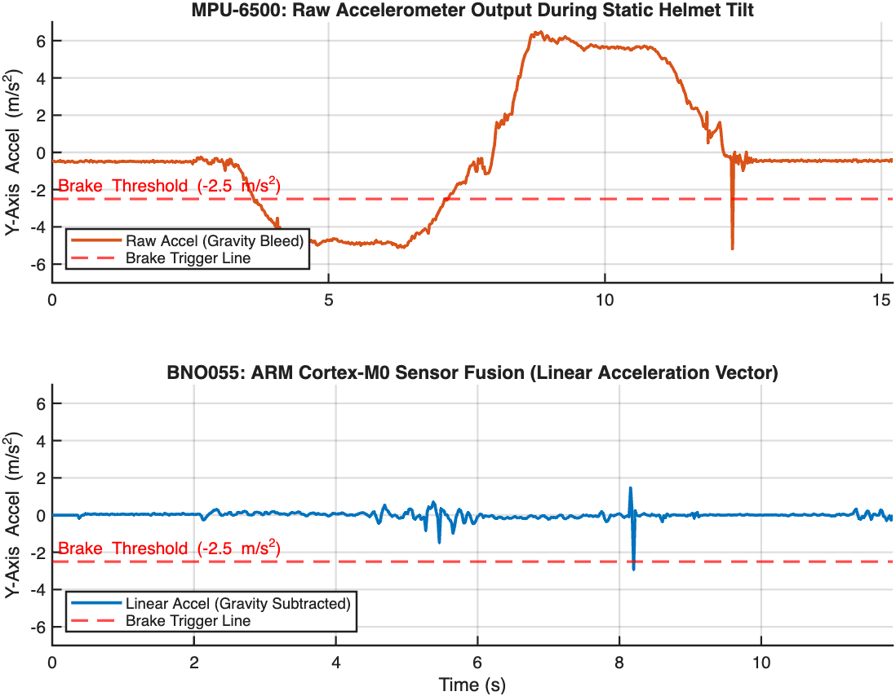

Smart Helmet Harness
Development of a retrofittable wearable featuring kinematic auto-braking, absolute gravity gesture signaling, and dual-bus haptic feedback.
View Full Report →Hardware-Agnostic Safety
This project is a functional prototype of a smart, attachable lighting harness designed to be mounted to existing DOT-certified motorcycle or bicycle helmets. Instead of relying on a Bluetooth connection to the bike or complex handlebar switches, the harness is an entirely self-contained system.
The primary engineering objective was to build a robust, responsive state machine capable of filtering out the severe kinematic "noise" of normal riding movements, running natively on a 3.3V embedded microcontroller.
Hardware Architecture
The core logic runs on the Arduino Nano ESP32, leveraging its processing power and its critical ability to route multiple hardware I²C buses simultaneously.
System Integration
-
Hardware Sensor Fusion
Motion tracking is handled by the Adafruit BNO055 9-DOF IMU. By utilizing its onboard ARM Cortex-M0 processor, the system mathematically strips out Earth's static gravity vector in real-time, yielding pure dynamic deceleration data.
-
Dual-Bus Haptic Control
Directional tactile feedback is provided by dual Texas Instruments DRV2605L controllers driving coin vibration motors. These utilize the ESP32's dual hardware I²C buses to avoid hardcoded address collisions.
-
Addressable Optics
Visual feedback is handled by a 100-pixel WS2812B LED array. To prevent DMA buffer trailing glitch bits on the ESP32, a "Phantom Pixel" software sink was implemented in the memory allocation.

Digital Signal Processing
Filtering messy human biomechanics through rigorous algorithm design.

Dual-Timer Debouncing
To prevent the brake lights from flickering erratically due to high-frequency kinematic noise (e.g., heel strikes when walking), I engineered a non-blocking, dual-timer debouncing filter within the state machine.
Trigger Delay (Low-Pass Filter): The system requires a sustained deceleration event crossing the threshold for a continuous 200ms before actuating. A sudden shockwave only lasts ~30ms, meaning the code safely ignores it.
Sustain Timer: Once actuated, a secondary 1000ms sustain timer ensures the optical array remains solidly illuminated during non-linear deceleration (soft stops).
Engineering Challenges
Transitioning from a breadboard proof-of-concept to a dynamic wearable introduced massive physical and digital hurdles.
"Gravity Bleed"
Raw accelerometers cannot differentiate between static gravity and dynamic movement. Leaning forward projected Earth's gravity onto the Y-axis, triggering false brakes.
Solution: Upgraded to the BNO055 to perform hardware sensor fusion, subtracting the gravity vector to yield a rock-solid 0.0 m/s² baseline during tilts.
Gimbal Lock & Cross-Coupling
Initial gesture controls relied on angular velocity. Looking over the shoulder naturally induces a slight ear-to-shoulder tilt, causing false turn signals.
Solution: Shifted the state machine to track the absolute 9.81 m/s² gravity vector instead of Euler angles, rendering gesture controls 100% immune to Yaw-induced false positives.
I²C Address Conflict
The Texas Instruments DRV2605L haptic chips have a hardwired I²C address of 0x5A. Using two for directional feedback crashed the bus.
Solution: Leveraged the ESP32-S3's internal silicon architecture to instantiate two entirely independent, hardware-level I²C buses to isolate the chips.

Telemetry Verification
To validate the hardware upgrade, raw CSV serial data was captured and processed using MATLAB 2025a. The plots perfectly illustrate the elimination of gravity bleed.
Furthermore, the transient spike detected at T=8.2s (caused by a physical tap during handling) provided the exact visual proof necessary to inform the mathematical development of the 200ms software debounce filter.
Future Iterations
- Custom PCB Layout: Consolidating the ESP32, BNO055, and dual DRV2605L drivers onto a single conformal footprint.
- Flexible Matrix Displays: Transitioning from rigid LED strips to a modular matrix to seamlessly wrap complex helmet curves.